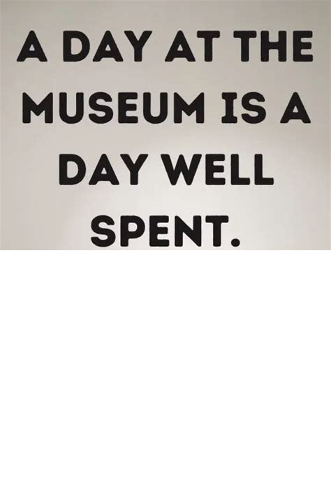

HOW DO I KNOW IF THIS SHOULD BE IN MY EXHHIBITION?
Sounding promising!
You collected the knowledge from the affected group, and discussed your exhibition with an ethics committee.
Those are important steps to take in regards to curating an exhibition. We can't give you perfect advice but
it seems like you've thought of it all! lets get that show on the road!
We wish you good luck!

← Back to Home
https://www.facebook.com/iain.salter.9. (2023, August 6). 100 Inspiring Museum Captions for Instagram (With Quotes!). The Road Trip Expert. https://www.theroadtripexpert.com/museum-captions-for-instagram/